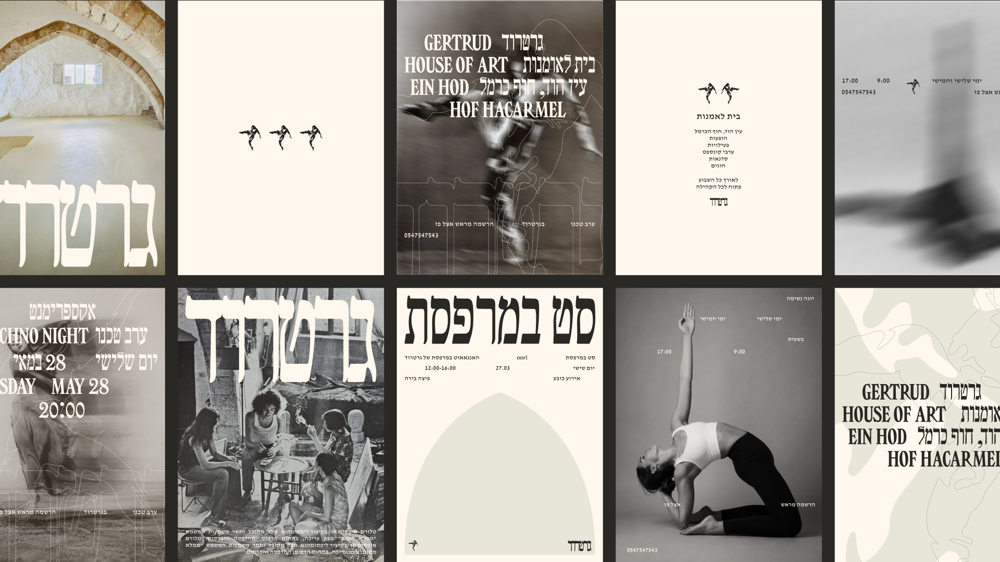
a house that kept dancing.
gertrud kraus lived here, worked here, moved here. ein hod, hof hacarmel.
the walls stayed. the studio passed from artist to artist. the building came back.
now it is a house of art again — exhibitions, music, dance, film, talks, workshops, body and mind, community
nights. open all week, open to everyone.
the identity is her body. a dancer traced in one line, caught mid-air, printed on stone and cotton and paper.
the letterforms carry her weight — heavy, hand-cut, leaning like a figure that has not landed yet.
the arch of the house becomes the frame. everything happens inside it.
heritage that is not a museum. a scene that is not a scene yet.
gertrud.
client | gertrud house of art, ein hod
creative director | eden vidal, inbal vidal
brand designer | hadar lozon
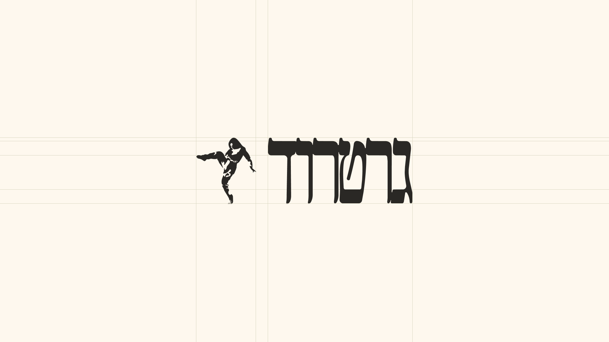
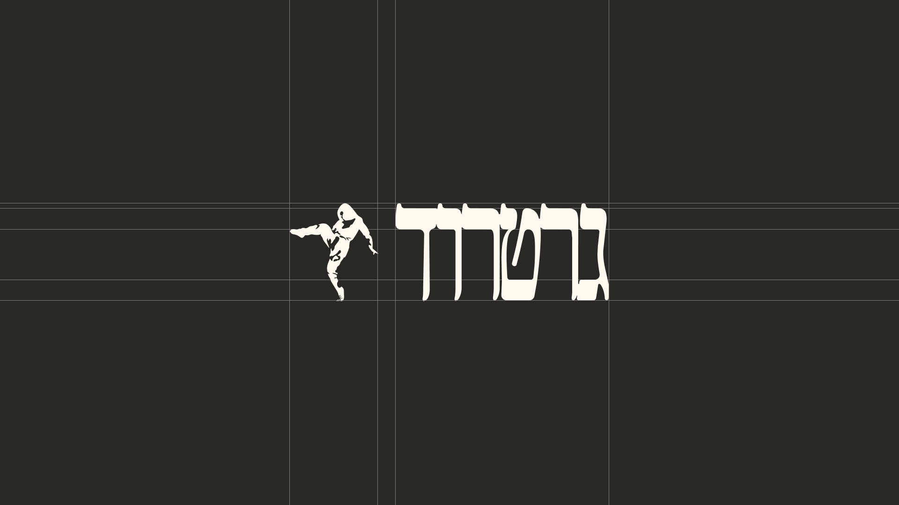
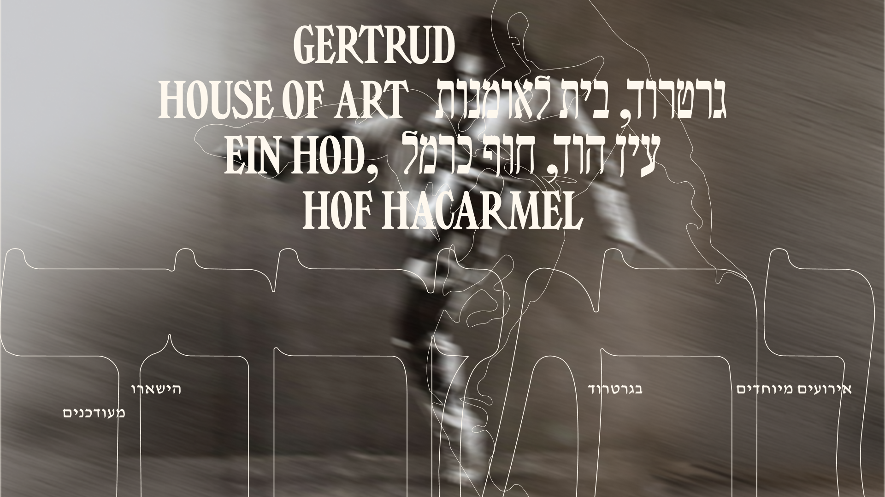
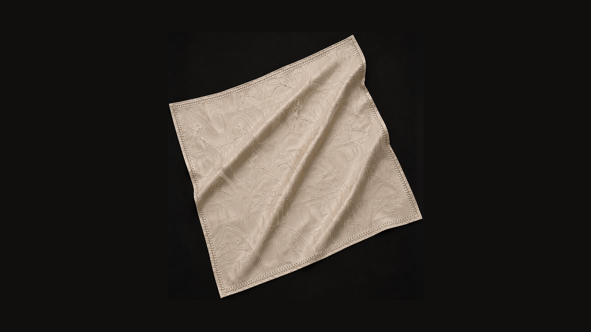
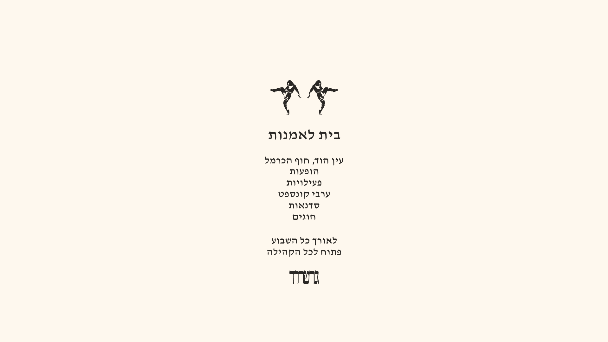
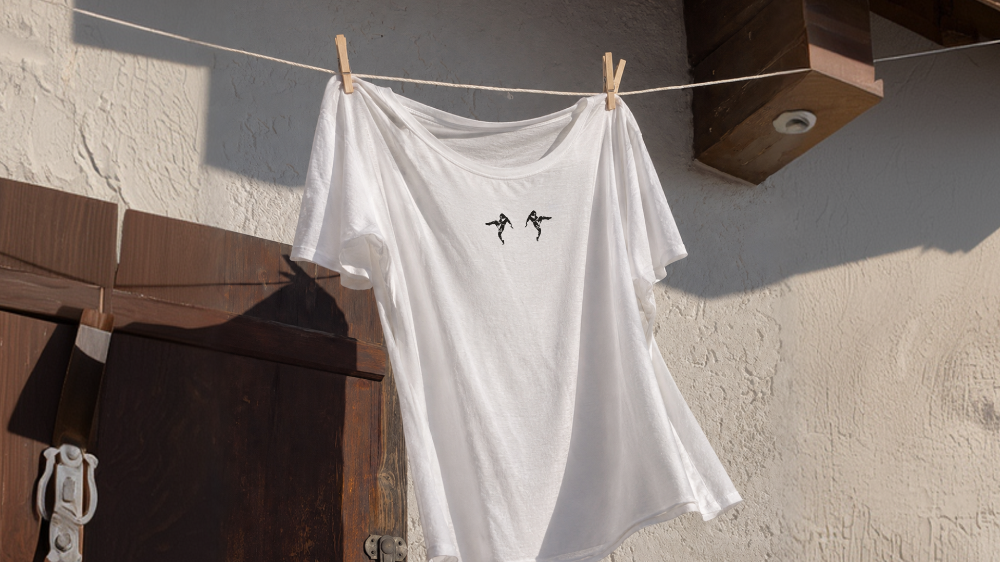
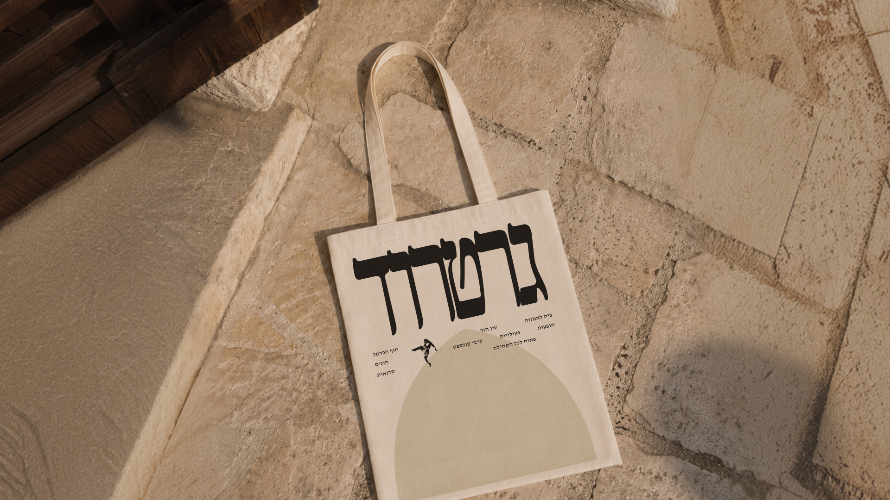
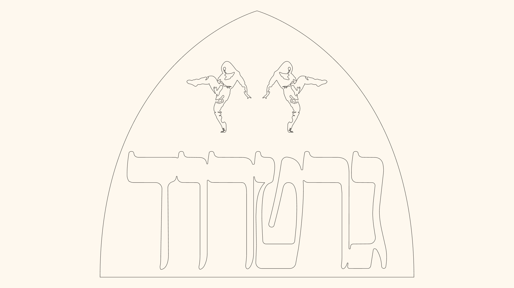
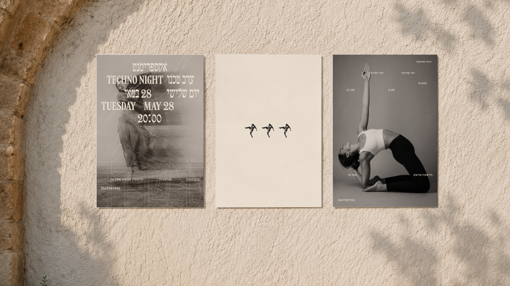
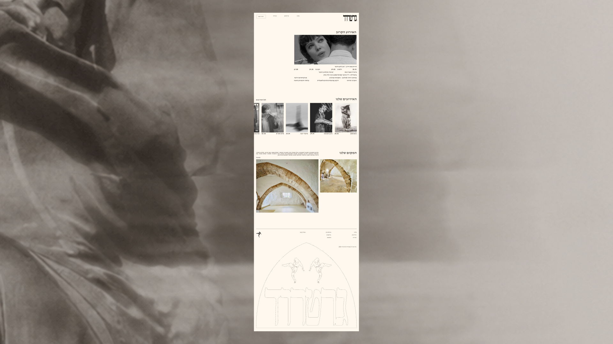